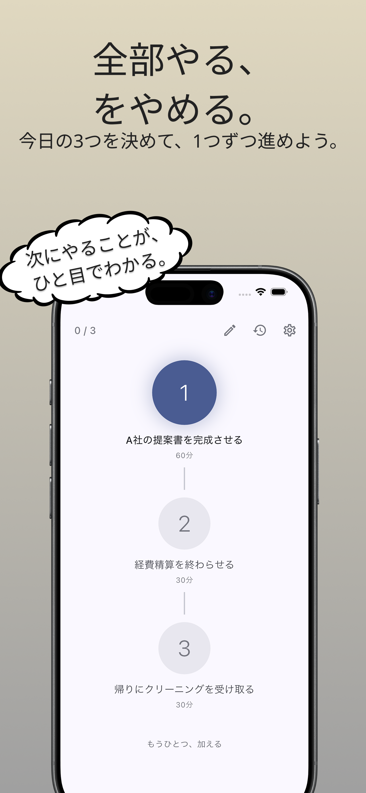
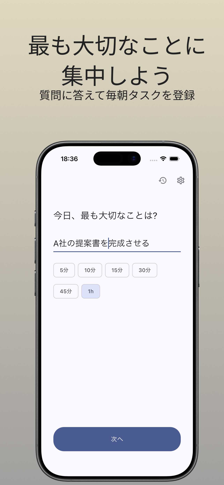
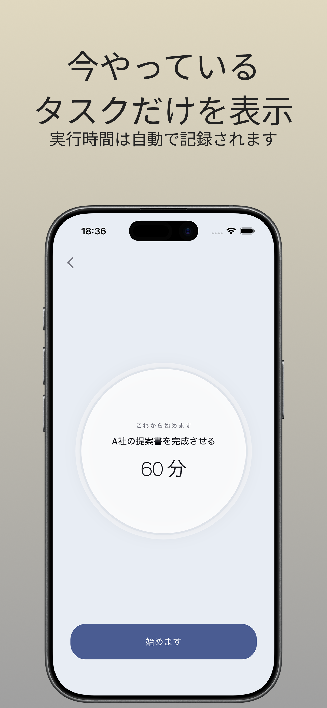
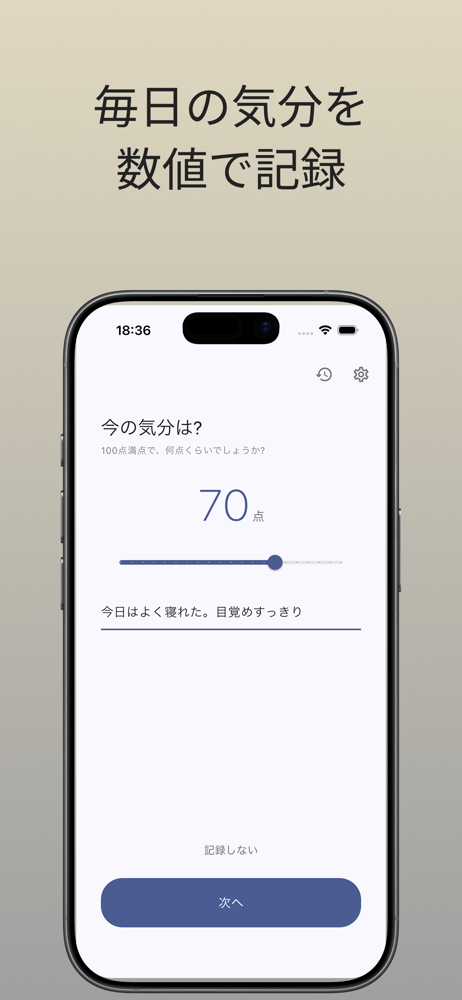
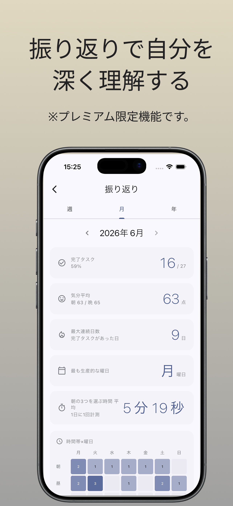
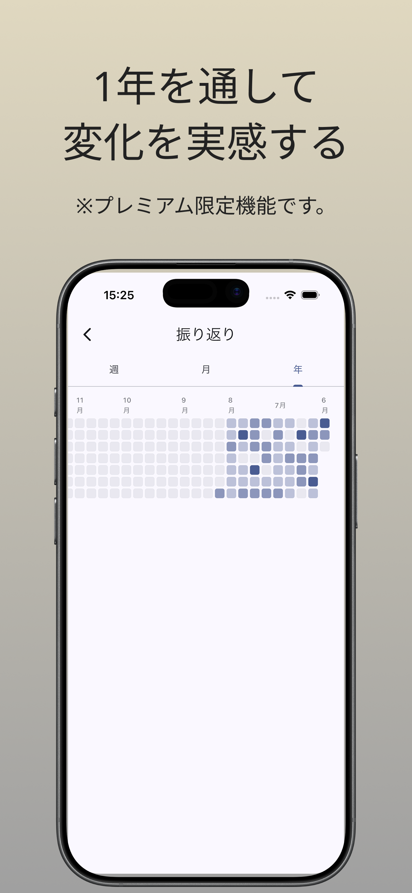

なぜ3つなのか
整理するアプリではなく、
始めるアプリ。
多くのタスク管理アプリは、「やることを整理する」ところまでは得意です。でも、最初の1つに取りかかるところは、ずっと自分でやるしかありませんでした。
やることを10個抱えたまま「何から始めよう」と考えている時間は、それ自体がエネルギーを消費します。Sponteは、その入口を3つに絞ることを薦めます。
数を増やすことが目的ではありません。3つの中の1つに、最後まで向き合うためのアプリです。
（足りない日はあとから加えることもできますが、推奨は3つです。）
主な機能
朝、3つだけ決める
いくつかの問いに答えるかたちで、今日の3つを順に書き出します。1番目・2番目・3番目が、そのまま優先順位になります。
開始すれば、画面に任せる
実行画面で「開始」を押すだけ。時間の計測も終了の記録も自動です。タイマーを止め忘れる心配はありません。
Apple Watch / Live Activity
iPhoneを取り出さなくても、Watchから開始と完了を操作できます。ロック画面のLive Activityに、いま取り組んでいる1つが表示されます。
気分の記録
3つを終えたあとの余白の時間に、今日の気分を数値で残せます。書いても書かなくても構いません。
静かな振り返り
週・月の単位で、自分の動きを静かに見返せます。評価も採点もしません。事実を、自然な日本語で並べ直すだけです。
端末内に保存
記録は端末内にだけ保存します。自動でクラウドに送る仕組みはなく、第三者の分析ツールも入れていません。
Premium
月末に、自分の動きを読み返す。
時間を使ったはずなのに、何も残っていない気がする。月末にそう感じることがあるなら、Sponteのプレミアムが役立ちます。毎月の記録を、自然な日本語の短い文章に整理して届けます。
月のテーマ
月初に1行のテーマを設定。月末レポートの冒頭に反映
月次レポート
その月の記録を自然な日本語で並べ直す
年間ヒートマップ
1年分の取り組みを時間帯×日付の格子で表示
PDF / 画像書き出し
月次レポートをPDFや画像として書き出し
無料でも基本機能はそのまま使えます。いつでも解約できます。
今日の3つを決める。
いま向き合う1つに集中する。
夜、今日の自分がどう動いたかを、静かに確かめる。
iOS 対応 / Android 対応予定